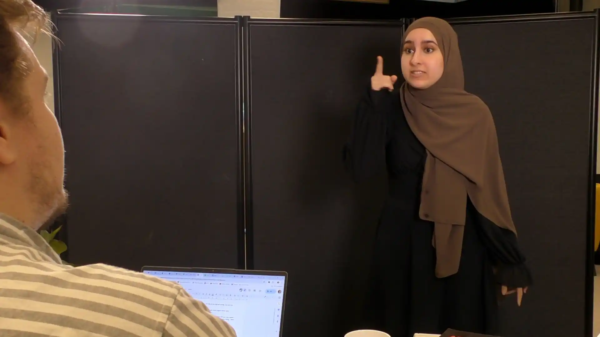
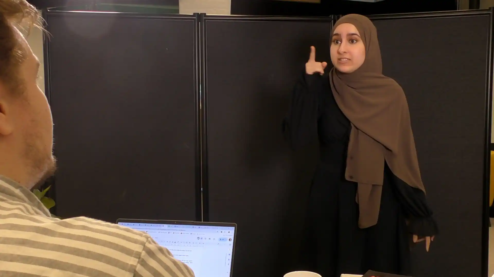

Tag quizzen her:
Test din viden om kommunikation's nedtrapning på denne quiz
Start Quizkonfliktnedtrapning
Samtale med Lars
Intro: Du opdager, at du er sat på en vagt, du ikke kan tage. Hvordan håndterer du det?
Godt valg: Du forklarer situationen respektfuldt og beder om hjælp. Lars forstår dig og peger dig i retning af mulige løsninger. I samarbejder om at finde en løsning.
Dårligt valg: Du reagerer aggressivt og angriber Lars personligt. Det skaber konflikt og ødelægger jeres samarbejde.
Den første samtale sætter tonen for resten af situationen. En samarbejdende og respektfuld tilgang viser ansvar og styrker fællesskabet – det øger chancen for, at kolleger vil hjælpe dig, nu og fremover. Omvendt skaber en aggressiv eller krævende tone mistillid og modstand, hvilket gør det svært at finde en løsning. Det handler ikke kun om at få sin vilje, men om at skabe fælles retning.
 


Telefonopkald med Petra
Intro: Du ringer til Petra for at finde en afløser. Dit valg af tone bliver afgørende.
Godt valg: Du er høflig og tydelig. Selvom Petra ikke kan tage vagten, giver hun dig forslag og lover at hjælpe, hvis du ikke finder nogen. Du åbner for samarbejde.
Dårligt valg: Du presser hende med krav og dårlig attitude. Petra bliver frustreret og lægger på. Du brænder en vigtig bro.
Petra-samtalen viser, hvordan vi i pressede situationer let overser andres grænser og behov. En venlig og tydelig tone skaber åbenhed og fælles ansvar – og gør Petra mere villig til at hjælpe. Men en krævende eller nedladende tilgang skaber modstand og kan ødelægge relationen, så du risikerer at stå alene med problemet.
Mødet med Signe
I sidste scene ser vi, hvad der sker, når kommunikationen er tydelig, respektfuld og imødekommende. Maja forklarer sin situation på en ordentlig måde – og Signe føler sig anerkendt og hjælper gerne.
Det viser, at god dialog ikke kun løser praktiske udfordringer, men styrker relationen og skaber en kultur, hvor vi hjælper hinanden.
Hvad får man ud af kurset?
Dette kursus viser, hvordan din tilgang til konflikter – både i tone og handling – påvirker hele forløbet. Ved at vælge empatisk kommunikation, ansvarlighed og samarbejde, opstår bedre løsninger, mindre stress og stærkere relationer. Du får praktisk erfaring med at nedtrappe konflikter og skabe en positiv arbejdskultur – én samtale ad gangen.